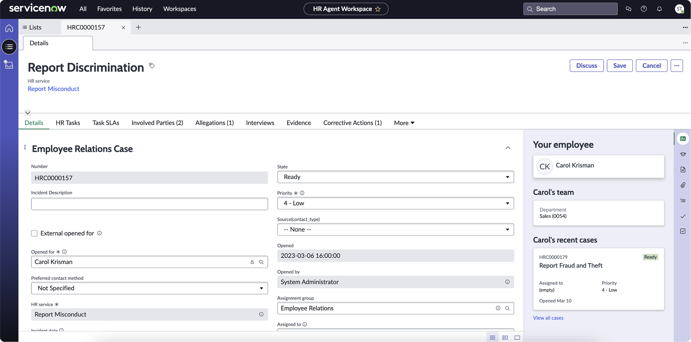
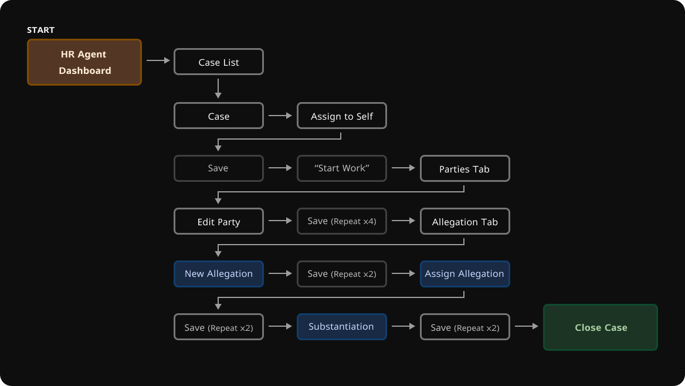

Disney's Investigation & Accomodation Tool
Overview
The process for managing investigative cases and accommodation requests was previously clunky and fragmented, making it
difficult to track progress, generate outcomes, and connect related efforts. This project set out to deliver a
streamlined, intuitive product solution tailored specifically for the Employee Relations (ER) team, who manage these
cases on a daily basis.
View Final Presentation
Team
- Sara: ER Project Manager
- Rashida: UX Project Manager
- Marilies: UX Researcher
- Heath: Product Owner
- Rachel (Me): Lead Product Designer
My Roles in depth
- Current-state Analyses
- Journey Mapping & Storyboarding
- Wireframing
- Prototyping & Testing
- Hi-Fidelity Design
- Stakeholder Collaboration
Discovery Phase
Because I was new to the case creation and investigation process, this project relied heavily on employee feedback and firsthand insights. Before identifying product pain points and opportunities, I conducted interviews to deeply understand the workflows, challenges, and needs of those involved.
Employee Interviews & Feedback
The researcher and I conducted multiple one-hour usability sessions, observing employees as they interacted with both
their current tool and competitor solutions. Throughout the sessions, we listened to their feedback, capturing
key concerns and needs to inform the design of a more intuitive and efficient case management tool. We created three core personas
to represent key users through the redesign:
An Intake Specialist, Case Manager, and VP (leaders)
ü•≤ Pain Points
Many of the employees we spoke with shared similar challenges when using competitor tools or managing overly complex Excel spreadsheets. With those insights in mind, my key priorities going into the design were:
- Disorientating Navigation - The additions of tabs throughout case management affords unnecessary complexity.
- Too Many Fields - Case managers would like to see only what is required to successfully manage the case.
- Valueless Clicks - The amount of clicks to perform a task is a constant area of concern.
- Unfamiliar Verbiage - The nomenclature is foreign to the wording case managers are used to.
- Task Variation - Case managers found that there were too many variations of completing a single task.
üòé Opportunities
It was almost overwhelming (in the best way) to keep track of all the opportunities that emerged from these interviews. The insights were both energizing and motivating as I transitioned into the design phase. A few key opportunities included:
- Streamline the Workflow - Render a linear mental model for case management.
- Profitable Clicks - Create an environment where every step and/or click is beneficial to the case.
- Clear Correlation - Make evident which claims are associated to which party and outcome.
- Efficient Real Estate - Make use of the screen’s space to effectively display information and fields.
- Desired Features - Case export, autosave, pre-populated form fields, and Outlook integration.
Market Analysis
Interviewing employees provided valuable insight into how these products function and the features offered by current market competitors. As a team, we aimed to deliver a custom design that not only outperformed existing solutions but also offered a return on investment that made it worthwhile for Disney to build in-house rather than partner with a vendor.
Current Workflow
By observing how employees interact with ServiceNow and Quickbase, I mapped out the workflow - requiring 15 clicks to navigate through multiple tabs and pages in effort to complete a single task.
Proposed Workflow
By designing an dynamic, single-page case management system, I reduced the time from case creation to case closing down to 5 clicks. This is the power of automation and giving users only what they need through targeting and logic.
Designing
Initial Prototype & Testing
We were able to follow-up with employees to test our newly-designed prototype. The interaction ad compactness of the design was extremely well recieved! We did end up having to adjust for additional features and targeting as the project manager finalized requirements.
Proposing the Experience
Once the design was finalized to meet employee and business needs, I presented the prototype and walked through the designs to
ensure leadership understood the impact of the new experience.
Walk through the product components below to learn more about features, interface details, and the requirements that led
to them.
View the Leadership Presentation
Submitting a Case
Previously, submitting a case was a manual process and handled separately from the intake form. Case managers were responsible for creating and entering all case details themselves. With the new experience, intake specialists can now input all requests and reports directly into a single, unified form, which automatically feeds into the case management portal. This streamlined approach reduces duplicate work and minimizes the risk of miscommunication, as all information is now housed in one system. Additionally, employees will even have the ability to submit accommodation requests on their own!

Case Agent Dashboard
The case dashboard served as the "homepage" for case managers. It provided a clear view of their current cases, statuses, and allowed them to create and manage tasks. In many ways, it functioned as a virtual desk, helping case managers stay organized and efficient in their daily work.
My Cases
Searchable • Subject(s) • Case Type(s) • Updated Date • Opened Date • Status

My Tasks
Curated Action Items (requires further discovery)

Unassigned Cases
Case Type(e) • Opened Date • Assign Case (superuser capability)
Data Visualization
The portal features widget-based data snippets that leaders can easily request and access. These concise, real-time insights help leadership make informed decisions quickly and efficiently.
Case Management
The case management page was the hub where all key activities took place. Think of it as the digital “case file.” It contained important details about the case, notes from interviews, and information about the subject and witnesses. This is also where the final decision was submitted, marking the official closure of the case.
üé¨ Manage a Case | Manage an Accomodation

Static Details
Certain case details, such as the Case Title, Case Number, Case Type(s), and Opened and Updated Dates, are determined automatically. Meanwhile, the case manager is responsible for managing the Status (e.g., Work in Progress, Cancelled, Closed), as well as options to delete the case and save changes, with an autosave feature running every 5 seconds to ensure no data is lost.

Incident & Accomodation Details
Cases were assigned by Case Managers after being submitted by Intake Specialists. The intake form provided key information such as the reporting channel, incident date and location, and a summary of the incident. Following resolution, additional details like the resolution date and any comments or notes were recorded to complete the case.


Employee Information
Party information includes the individual’s name, role (such as Subject, Witness, Complainant, or HR Business Partner), case history, and employee details. For production employees, additional information like the production company, distributor, show name, and location is recorded. If the party is identified as the subject, details regarding the case type, findings, and resolution type are also documented.
The party case history is accessible through a modal view that is searchable and displays cases in a list format, including details such as case type(s), opened and closed dates, status, and involved parties. Employee details—sourced directly from HR—include name, PRNR, title, business unit, organization, leader, employee type, union status, and hire date. Additionally, work contact information like phone number, email, and address is provided for easy reference.

Case Notes
The notes log was used to track notes and save them chronologically with the ability for the author to edit or delete them. These notes would contain the author's name, date, and time of posting. These comments would save to the case record once closed.
Additional Actions
The Export Case Report feature allows users to download all case details and attachments bundled into a single .zip file. Keywords can be predefined, added, or removed, and are indexed to enhance search functionality. Attachments can be uploaded easily via drag-and-drop or file selection, with support for large file sizes. The attachments list is organized chronologically and categorized by upload type (such as interview notes, correspondence, emails, or summaries), along with the upload date. Users can download or delete attachments and view additional details by expanding or collapsing each item. Additionally, cases can be linked to related cases, with options to select, link, or remove these connections as needed.

Viewing a Closed Case
The system distinguishes between read-only and actionable items. Read-only sections include static details, incident details, and case details, which cannot be edited. Actionable items available to users include exporting case reports, adding keywords, uploading and managing attachments, and linking correlating cases.

In Conclusion
The Disney ER Case Tool revolutionized the Employee Relations case management process by transforming a fragmented, multi-step workflow into a streamlined, intuitive experience. Through user-centered design, the tool reduced case processing from 15 clicks to just five, minimized redundant data entry, and integrated essential features like autosave, keyword tagging, and Outlook synchronization. By aligning with employee needs and business objectives, this solution not only enhanced operational efficiency but also fostered a more cohesive and user-friendly environment for case managers and intake specialists alike.